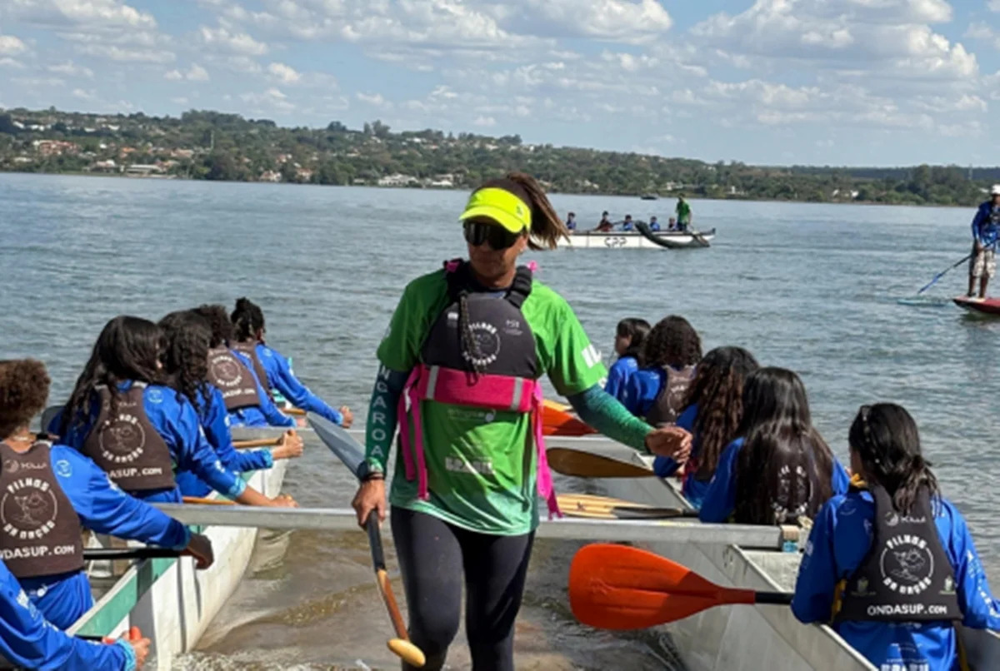

ESPORTES
Obras do GDF na Sua Porta transformam a rotina de moradores de Ceilândia
Intervenções recuperam espaços públicos e ampliam as opções de esporte e convivência para a comunidade.
Informação confiável e organizada sobre o que acontece no Distrito Federal.
Intervenções recuperam espaços públicos e ampliam as opções de esporte e convivência para a comunidade.

Famílias participaram de atividades gratuitas e ocuparam a área urbana com esporte, cultura e lazer.

Calendário organiza a apresentação e a análise de propostas esportivas previstas para 2026.

Órgãos orientam moradores a acompanhar os canais oficiais e evitar áreas com risco de alagamento.

Programação reúne atrações culturais, atividades esportivas e experiências para toda a família.

Vagas contemplam diferentes níveis de experiência e regiões administrativas.
Propostas serão analisadas pelas comissões antes de seguirem para votação.
Empreendedores apostam em serviços locais e novas formas de atendimento à comunidade.
Tente outra categoria ou termo de busca.